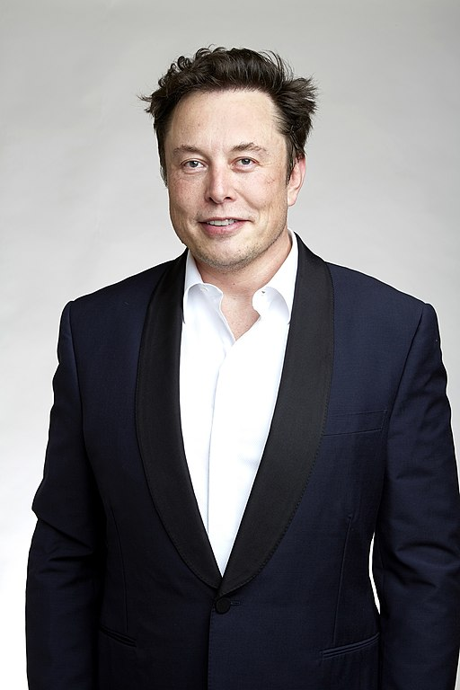

Elon Musk
1971-South Africa Republic
Space Terminator
Elon Reeve Musk Musk was elected a Fellow of the Royal Society (FRS) in 2018[22][23] He was also ranked 24th in the "World's Most Powerful People" list published by Forbes magazine in December 2016;[24] In 2019, he was ranked first in the "World's Most Innovative People" list published by Forbes.[25] Musk's colorful personality also caught the attention of filmmaker Jon Favreau, and he made a brief appearance in the 2010 movie Iron Man 2. In addition, he also coordinated in an interview that producer Jon Favreau spent time together with Elon Musk and actor Robert Downey Jr.[26]
Biographies
- Musk was born on June 28, 1971 in Pretoria, South Africa.
- Musk became interested in computers when he was 10 years old. He taught himself to program and at the age of 12 sold his first software: a game he created himself called Blastar.
- Musk's mother, Maye Musk, is a Canadian model and the oldest woman to star in the Covergirl campaign. Growing up, Musk worked five jobs simultaneously to support his family.
- Musk moved to Canada in 1989 at the age of 17 to attend Queen's University and avoid compulsory service in the South African army.
- In 1992, Musk left Canada to study business and physics at the University of Pennsylvania. Graduated with a bachelor's degree in economics and remained for a second bachelor's degree in physics